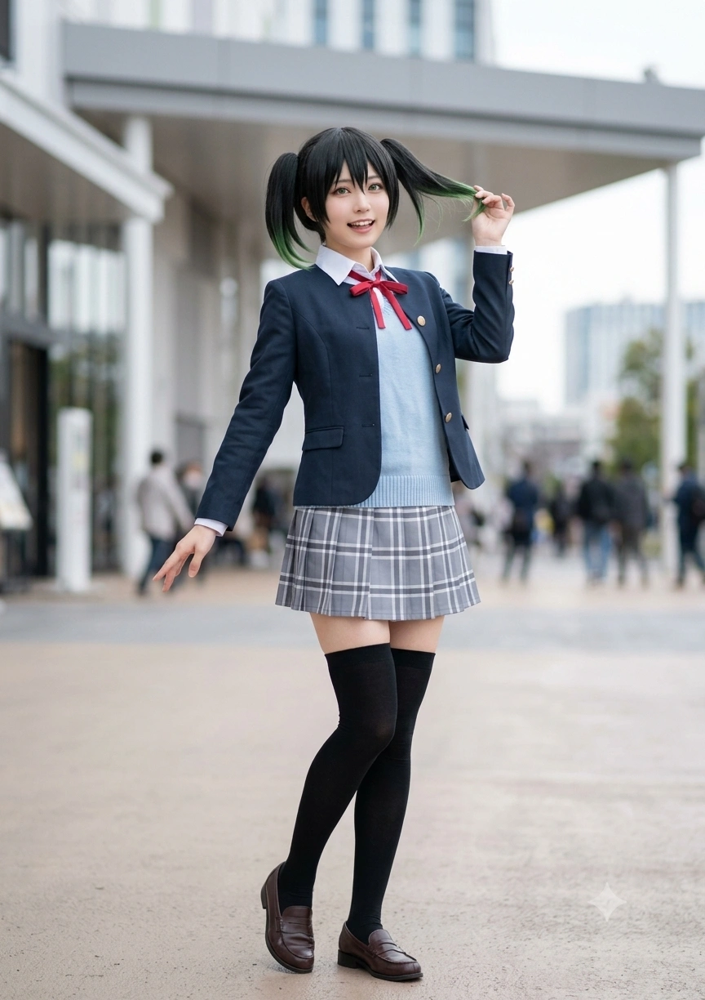
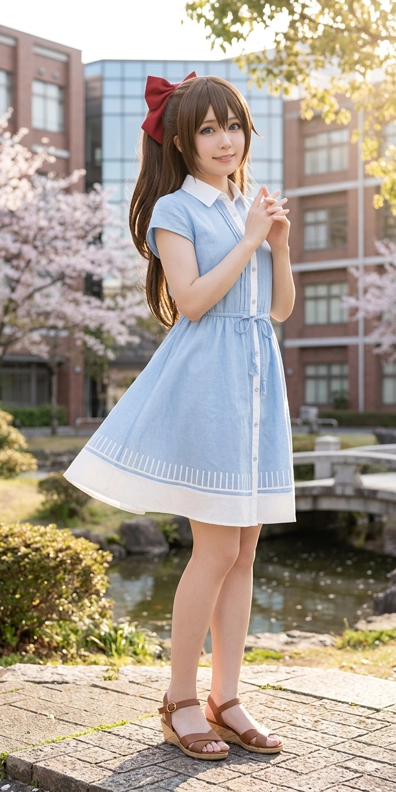
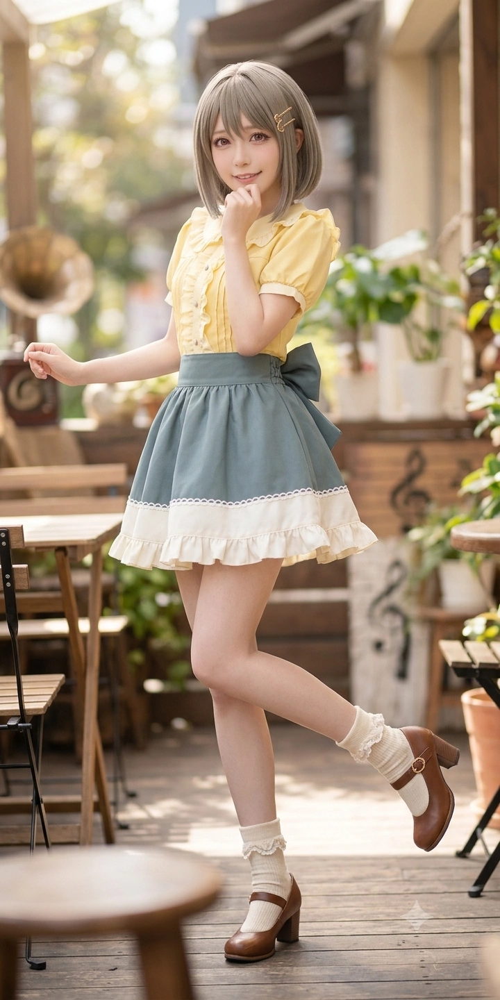
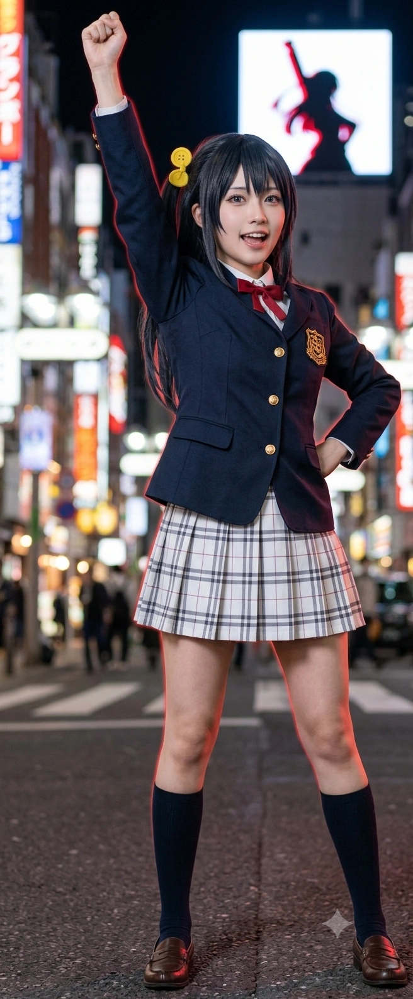
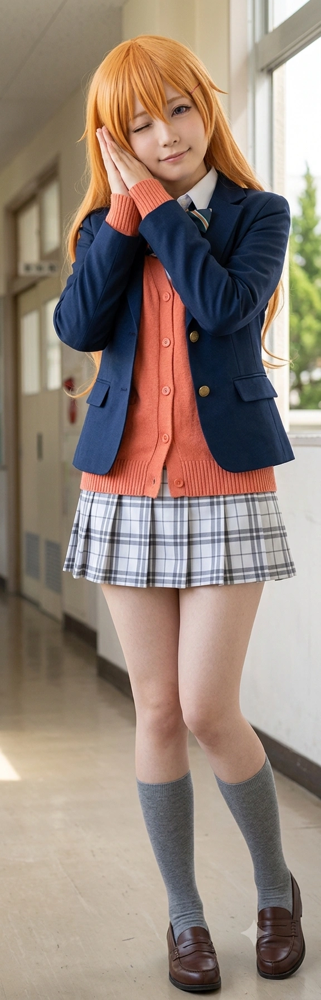
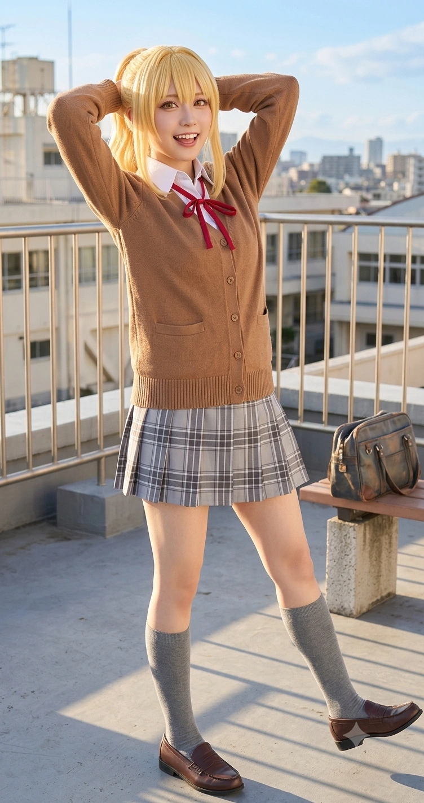
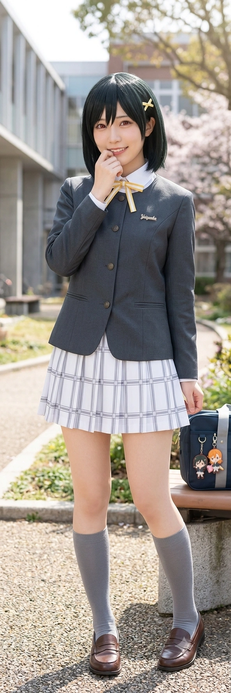

- 1. 개요
- 2. 멤버 소개 (13인의 3D 현신)
- 3. 동호회 결성 및 피 튀기는 역사
- 3.1. 내조초 입학 사태: 떡볶이 구원 사건
- 3.2. 내성중 마굴: 얀데레 아빠 찬스와 규합
- 3.3. 효빈여고 시절: 학생회장 vs 부장의 빵 전쟁
- 4. 주요 특징 및 내부 대환장 문화
- 4.1. 숨 막히는 정실 대전 (시연 vs 채나)
- 4.2. 강하애의 공포 스파르타 (다쟈레 고문)
- 4.3. 탄수화물 사육과 7kg 살크업 대참사
- 4.4. 전집 '스마트 런웨이' 혁명 (리내, 향림, 엠마)
- 5. 전설적인 참교육 일화 (대외 전투)
- 5.1. 사회대 선거 1% 후보 멸망전 (제로콜라 눈사태)
- 5.2. 베르데 홀 "메카쿠시테!" 방어전
- 5.3. 스칼렛 스톰 (오물 테러 물리적 응징)
- 5.4. 소개팅 쓰레기남 물리/사이버 합동 사형 선고
- 5.5. 고하루 물리치료 (K-장녀의 완벽한 해방)
- 6. 든든한 뒷배 및 관련 인물들
- 7. 여담 (대환장 TMI 및 미공개 일화)
- 7.1. 흉가 MT 귀신 멱살잡이 사건
- 7.2. 미팅 잠입 파괴 공작 (철통 방어)
- 7.3. 제로 슈거 반란 사태와 빵 밀반입
- 7.4. 기말고사 도서관 좀비 사태와 수면 연기
- 8. 각주
1. 개요
"우린 하나만 고르지 않아. 완벽함도 귀여움도 전부 다이스키(大好き)!"
효빈대학교 캠퍼스를 쥐락펴락하는 차세대 정치 괴물과 그 찐친들의 대환장 파티 연합.
효빈대학교 사회과학대학 학생회장 김시연을 필두로, 유치원 및 초중고 시절부터 산전수전을 함께 겪으며 뭉친 2004년생 동갑내기 7인방 + 청일점 1명, 그리고 5명의 확장 멤버(총 13명)를 일컫는 비공식 명칭이다. 멤버 전원이 일본의 유명 서브컬처 프랜차이즈인 니지가사키 학원 스쿨 아이돌 동호회의 캐릭터들과 외모, 성격, 전공, 심지어 생일과 특정 밈(다이스키, 다쟈레, 요리치, 길치 등)까지 소름 돋게 일치하는 완벽한 3차원 실사판 그룹이다.
평소에는 자기들끼리 서로를 향해 얀데레 짓을 하거나, 숨 막히는 아재개그 고문을 시전하고, 탄수화물 폭탄 빵으로 서로를 사육(?)하는 등 시트콤 뺨치는 유쾌하고도 살벌한 일상을 보낸다. 하지만 누군가 자신들의 '성역(오시)'을 건드리거나 혐오 정치 세력(예: 윤재훈, 주민우, 1% 후보 등)이 깽판을 칠 때는 완벽한 행정력, 압도적인 물리력, 소름 돋는 사이버 정보력을 결합하여 상대를 사회적으로 뼈도 못 추리게 매장해버리는 효빈시 최고의 무장(?) 사조직이기도 하다.
2. 멤버 소개 (13인의 3D 현신)
이들은 각자의 모티브가 된 오시(최애) 캐릭터의 특성을 200% 현실 고증하며, 각자의 포지션에서 압도적인 존재감을 뿜어낸다.
2.1. 창립 멤버 및 수뇌부 (Core 7+1)
효빈시의 차세대 정치 괴물이자 이 거대 카르텔의 절대적 흑막. 아유무 특유의 '무거운 사랑'과 하이라이트 꺼진 죽은 눈빛을 자유자재로 구사하며 '사이버 국정원장'급 정보력으로 정적들을 분리수거한다. 소꿉친구 고소유의 반경 3m 이내를 감시하며 연적(?)들을 제거하는 무서운 집착을 보여준다.

육상부 에이스 출신의 무자각 플러팅 장인. "히토리다케난테 에라베나이요!"를 외치며 김시연의 얀데레 폭주를 막을 수 있는 유일한 억제기다. 나수미의 특제 코페빵을 매일 거덜 내다 7kg 살크업 대참사를 겪고 밤마다 트랙을 뛴 전적이 있다. 이 집단의 모든 기싸움을 웃음으로 중재하는 진정한 하렘 마스터.

평소엔 파란 리본을 매고 조신한 야마토 나데시코인 척하지만, 대본이 막히거나 실연당하면 "당장 소맥 내놔!!"를 외치며 참이슬 병나발을 부는 치명적 냥집사. 베르데 홀에서 등신대를 부수려는 혐오 세력을 향해 "메카쿠시테(눈 가려)!"라는 전설의 두성 사자후를 내질러 최애 성우를 지켜냈다.

자칭 '수밍'이자 그룹의 탄수화물 폭격기. 어설픈 하라구로 장난을 치려다 눈치 100단 하애에게 와사비 룰렛으로 역관광 당한다. 누군가 "수미칩"이라고 부르거나 진상이 깽판을 치면 '엑스칼리버 특대 바게트'를 꼬나쥐고 물리치료를 시전하려 든다.

학생회 행정을 깐깐하게 통솔하다가도 안경만 벗으면 "다이스키!"를 부르짖는 이중생활의 달인. 주방에서 보라색 독가스를 연성하여 수미에게 영구 출입 금지를 당했다. 자신의 최애 스칼렛 레드 버스에 오물을 던진 윤재훈을 안경을 내동댕이치고 몸통 박치기로 제압한 전설의 행동파.

지독한 소년가장(K-장녀) 굴레에서 시연의 물리치료(?) 팩폭으로 완벽히 해방된 인물. 박효빈 시장과 완벽한 흙수저 평행이론을 가져 특강 때 부둥켜안고 대성통곡했다. 수업 중 자면서 렘수면으로 실전 압축 수면 학습을 하며, 자는 척 시연과 채나의 기싸움을 심리학적으로 프로파일링한다.

인싸력 만렙의 피지컬 브레인이자 "아이 좋아 전 집" 차기 사장님. 틈만 나면 숨 막히는 아재개그(다쟈레)를 시전해 현장을 빙하기로 만든다. 시험 기간엔 나수미의 오븐 전원을 압수하고 구석방에 감금해 아재개그 오답노트 스파르타 특훈을 강제하는 공포의 멘토다.
효빈시 최악의 혐오 빌런 주민우의 아들이지만 돌연변이급으로 선하게 자란 조용한 오타쿠. 가족에게 학대당하다 야반도주하여 완벽히 손절했다. 일진에게 맞을 뻔한 걸 시연 프렌즈가 구해줬으며, 고소유와 친하게 놀다가 시연의 얀데레 레이저 빔에 암살당할 뻔한 불쌍한 샌드백이다.
2.2. 확장 멤버 및 동맹 연합 (Extended 5)

홍콩에서 온 부잣집 유학생 아가씨. 겉보기엔 완벽주의 Queen 같지만 실상은 친구를 너무 좋아해 주체하지 못하는 '대형 댕댕이'다. 초등학생 시절 굶주리던 성우에게 만두를 주었고, 효빈대에서 재회하여 우주 최고 맛의 '소롱포 3단 도시락'을 선사해 에타를 뒤집어 놓았다.

초5 나이에 중2로 월반해버린 뉴욕 출신 한미 혼혈 천재 소녀. 입에 "Shit! Baby쨩!"을 달고 산다. 쇠창살을 뜯고 도망쳐 피투성이가 된 중학생 주성우를 맥도날드 앞에서 발견하고, 단 1초 만에 억울함을 간파한 뒤 "Stop baby, 대신 나랑 친구나 해"라며 햄버거 세트로 구원해 주었다.
외딴 인채도에서 상경한 치명적 몸매의 모델 지망생. 길을 잃고 헤매다 우연히 "아이 좋아 전 집"에 정착했다. 도매시장 심부름을 가다 반대편 구(區)로 가버린 구제 불능의 길치라 심부름 영구 면제를 받았으나, 은쟁반을 들고 골반을 튕기는 도발적인 '런웨이 서빙'으로 전집 매출을 폭발시켰다.

스위스에서 K-푸드에 반해 날아온 외국인 처자. 파전과 몬자야키를 흡입하며 "보우노!"를 외친다. 향림의 룸메이트였으나, 현재는 아예 강하애의 본가 2층에 짐을 풀고 식객으로 얹혀살고 있다. 진상이 뜨면 "마이너스 이온 방출~!"을 외치며 묵직한 스위스 산악 피지컬의 '엠마 펀치'를 날린다.

효빈과학기술원(HIST)에 재학 중인 초엘리트 막내(05년생). 극도의 부끄러움 때문에 본인이 직접 코딩한 '리내짱 보드 ( ´ ▽ ` )'를 얼굴에 쓰고 서빙을 한다. 계산 바보 나수미 때문에 아비규환이던 전집 카운터에 등판하여, 단 이틀 만에 최첨단 클라우드 스마트 POS 시스템으로 갈아엎어 버린 구원자다.
3. 동호회 결성 및 피 튀기는 역사
이들이 '무지개 동호회'라는 완전체로 거듭나기까지는 길고 다사다난한 학창 시절의 끈끈한 연대와 피 튀기는 갈등, 그리고 수많은 빌런 참교육의 역사가 존재했다.
3.1. 내조초 입학 사태: 떡볶이 구원 사건
그룹 결성의 가장 근본적인 뿌리는 내조초등학교 시절로 거슬러 올라간다. 초등학교 2학년, 당시 김시연이 짝사랑하던 남학생이 다른 여자애와 사귄다는 소식을 듣고 필통에서 커터칼을 쥐고 아유무(진) 흑화 모드로 돌입하려던 찰나였다. 사태의 심각성을 본능적으로 깨달은 고소유가 기겁하며 시연을 억지로 붙잡아 학교 앞 떡볶이집으로 질질 끌고 가 떡볶이를 물리며(?) 폭주를 막아냈다.
이 사건으로 소유는 김성민 시장(아빠)과 이한선 여사(엄마)의 무한한 지지와 맹목적인 신뢰를 받는 '평화 유지군'으로 등극했고, 19년 동행의 족쇄가 완벽히 채워졌다. (참고로 당시 그 떡볶이집 구석에서 피곤에 쩔어 엎드려 자고 있던 초등학생이 바로 고노애였다.)
3.2. 내성중 마굴: 얀데레 아빠 찬스와 규합
효빈시 최악의 마굴이었던 효빈내성중학교에서 두 번째 거대한 서사가 탄생했다. 뇌전증으로 투병 중인 아버지와 악마 같은 동생 때문에 우울증과 빈곤형 비만에 시달리며 죽어가던 고노애를, 특유의 햇살 같은 친화력과 끔찍한 아재개그로 강제 다이어트(?)시키고 양지로 끌어낸 구원자가 바로 강하애였다.
한편, 아버지 주민우의 패악질로부터 이 소녀들을 보호하고자 일부러 모질게 굴며 '나쁜 놈 코스프레'를 하던 주성우가 일진들에게 으슥한 골목으로 끌려가 패드립과 성희롱을 당할 때였다. 미행하던 시연 프렌즈가 몸을 던져 난입했고, 이성을 잃은 김시연은 완벽한 죽은 눈으로 당시 시의원이던 아버지 김성민에게 직통 전화를 걸어 공권력으로 일진들을 합법적으로 증발시켜버렸다. "성우야 다 아니까 도망치지 마 ^^"라는 시연의 섬뜩한 위로와 함께 성우는 그룹의 유일한 청일점 찐친으로 합류했다.
3.3. 효빈여고 시절: 학생회장 vs 부장의 빵 전쟁
효빈여자고등학교로 진학한 후, 깐깐한 원리원칙주의자인 학생회장 유채나와 귀여움 지상주의자인 스쿨 아이돌 부장 나수미가 예산 및 부실 사용 문제로 애니메이션 1기 뺨치는 살벌한 기싸움을 벌였다.
채나가 규정을 들이밀며 부실 문을 걸어 잠그려 하고, 빡친 수미가 채나의 실내화에 몰래 빵을 쑤셔 넣는 유치한 장난을 치며 난동을 부릴 때였다. 천연 하렘 마스터 고소유가 난입해 "나는 채나의 깐깐함도, 수미의 귀여움도 전부 다이스키!"라며 기적의 플러팅 중재를 해냈다. 소유의 완벽한 팩폭성(?) 플러팅 덕분에 두 사람은 서로의 방식을 이해하게 되었고, 이 사건을 계기로 채나가 무리에 합류하며 핵심 멤버 전원이 모이게 되었다.
4. 주요 특징 및 내부 대환장 문화
4.1. 숨 막히는 정실 대전 (시연 vs 채나)
육상부 에이스인 고소유의 '두근거림'을 쫓는 맹렬한 직진녀 유채나와, 소유를 19년간 독점해 온 합법 얀데레 김시연 간의 피 튀기는 삼각관계(세츠-뽀무 현실판)다.
가장 유명한 사건은 효빈여고 체육대회 100m 결승전. 소유가 1등으로 골인하자 채나가 안경을 집어 던지고 "소유 쨩 다이스키!!"를 외치며 돌진했다. 그러나 어느새 스탠드 그늘 밑에서 죽은 눈을 켠 김시연이 앞을 가로막고 서늘하게 속삭였다.
"채나 쨩... 우리 소유 쨩 수건은 내가 벌써 챙겨왔는데? 척추를 반으로 접어버리기 전에 저리 가있을래...? ^^"
살벌한 기싸움 속에서도 천연 둔감 속성인 소유는 "둘 다 나 응원하러 온 거야? 히토리다케난테 에라베나이요!"라며 해맑게 양다리(?)를 걸치고, 고노애는 학생회실 쇼파에 자는 척 누워 이 둘의 애착 불안을 심리학적으로 프로파일링한다. 오이슬 역시 조용한 요물처럼 뒤에서 소유의 팔짱을 끼며 스릴을 즐긴다.
4.2. 강하애의 공포 스파르타 (다쟈레 고문)
시험 기간만 되면 하애의 본가 전집 구석방은 아재개그(다쟈레) 고문소로 돌변한다. 공부에서 탈주하려는 오이슬과 나수미를 하애가 뒷덜미부터 낚아채어 오븐 전원 코드를 압수하고 감금(?)한 뒤, 영어 지문 낭독 스파르타 특훈을 실시한다.
가장 끔찍한 점은 문제를 틀릴 때마다 오답 노트 대신 "오렌지를 먹은 지 얼마나 오렌지" 류의 숨이 턱턱 막히는 썰렁개그 언어폭력을 듣는다는 것이다. 결국 멘탈이 완벽하게 터진 오이슬이 고상한 야마토 나데시코 코스프레를 집어던지고 "아 몰라!! 당장 소맥 내놔!!"라며 참이슬 병나발을 불어버리면 그날 과외가 파투 나는 연례행사가 반복된다.
4.3. 탄수화물 사육과 7kg 살크업 대참사
제과제빵학과의 에이스 나수미가 매일 아침 구워오는 특제 생크림 코페빵과 마들렌은 그룹 내 마약과도 같은 간식이다. 문제는 빵을 너무 사랑하는 고소유가 수미의 빵을 거덜 내다가 두 달 만에 무려 7kg이 찌는 대참사(살크업)를 겪었다는 것이다.
결국 바지가 잠기지 않아 피눈물을 흘리며 대운동장 트랙을 질주하는 다이어트에 돌입해야 했다. 수미는 이에 굴하지 않고 굶고 다니는 고노애의 입에 빵을 쑤셔 넣거나, 불쌍하게 알바를 마친 주성우의 퇴근길 비닐봉지에 영양가 있는 샌드위치를 몰래 챙겨주는 등 훈훈한 탄수화물 폭격기로 맹활약 중이다.
4.4. 전집 '스마트 런웨이' 혁명 (리내, 향림, 엠마)
강하애의 본가 "아이 좋아 전 집"은 이들의 거점이자 애니메이션 실사판 알바생들이 모이는 핫플레이스 플랫폼이다.
계산 바보 나수미가 마이너스 결제를 띄우며 깽판을 치던 카운터에 HIST 이과 영재 천리내가 구원투수로 등판하여, 단 이틀 만에 구시대 장부를 최첨단 클라우드 스마트 POS 시스템으로 갈아엎어 버렸다. 천리내는 부끄러움 탓에 본인이 프로그래밍한 '리내짱 보드( ´ ▽ ` )'를 얼굴에 쓰고 응대한다.
홀 서빙은 스위스에서 온 유학생 엠마 체레스떼가 파전을 축내며 "보우노!"를 외치고 진상에게 엠마 펀치를 먹이는가 하면, 길치 모델 지망생 조향림이 은쟁반을 들고 골반을 튕기며 도발적인 '런웨이 서빙'을 시전한다. 이 미친 라인업 덕분에 전집은 애매한 시간에도 밥을 먹으러 직관을 오는 대학생 팬덤으로 폭발적인 흑자를 기록 중이다.
5. 전설적인 참교육 일화 (대외 전투)
자기들끼리 놀 때는 유치한 시트콤이지만, 혐오 세력이 나타나면 이들은 사이버 정보망(시연+리내) + 물리력(하애/향림/채나) + 행정(노애/채나)을 완벽히 갖춘 효빈시 최강의 자경단 어벤져스로 돌변한다.
5.1. 사회대 선거 1% 후보 멸망전 (제로콜라 눈사태)
2025년 사회대 학생회장 선거 당시, 김시연의 압도적인 "시여니다 뿅~☆" 씹덕 유세와 치밀한 30대 핀셋 공약(97% 이행률)에 멘탈이 나간 기호 3번 1% 후보(일명 윤찍남)가 찌질한 자폭 테러를 감행하며 자멸한 전설의 시리즈다.
- 우유팩 투척 대첩: 윤찍남 무리가 로스쿨 앞에서 고성방가를 지르며 시연을 광대라 비하하자, 빡친 법대생들과 씹덕 학우들이 대통합을 이뤘다. 분노한 인파가 던진 차갑고 하얀 딸기/바나나 우유팩에 흠씬 두들겨 맞은 윤찍남은 유제품 제조기가 되어 철쭉나무 덤불에 고꾸라졌다.
- 중앙환승장 마이크 공개 처형: 환승장 방송실에 무단 침입해 선동하려다, 시스템 오류로 윤재훈과 불법 선거 자금을 모의하는 통화 내용이 캠퍼스 전역 스피커로 생중계되었다. 바지를 적시며 캠퍼스 폴리스에게 끌려가 선거 캠프가 공중분해 되었다.
- 제로콜라 눈사태: 캠퍼스 출입 정지를 당하고도 야간 대동제 때 정외과 주점에 '가짜 룸살롱 영수증'을 쑤셔 넣으려 침입했다. 하지만 시연이 미리 깔아둔 CCTV 센서와 시스템에 완벽히 걸렸고, 도망치다 주점에 쌓여있던 수십 박스의 제로콜라 대형 페트병을 건드려 도미노 폭포를 온몸에 뒤집어쓰고 끈적하게 나자빠졌다. 다음 날 오이슬이 다가와 "어머, 대본에도 없는 코미디 연기를 참 리얼하게 하시네요~"라며 확인 사살 팩폭을 날렸다.
5.2. 베르데 홀 "메카쿠시테!" 방어전
극우 혐오 빌런 윤재훈이 선거 참패 후 앙심을 품고 술 냄새를 풍기며 효빈대 베르데 홀에 세워진 시즈쿠와 카스미 대형 등신대 패널을 쇠파이프로 박살 내러 돌진했을 때다. 마침 무대 뒤에서 본토 성우들(마에다 카오리, 사가라 마유)이 등장해 이 미개한 꼴을 볼 위기에 처했다.
이때 오이슬이 자신의 최애 성우들을 끔찍한 시야로부터 보호하기 위해 단전에서 끌어올린 엄청난 두성 발성으로 사자후를 토해냈다.
"메카쿠시테에에에엑!!! (目隠して!!! / 눈 가려!!!)"
이 외침에 수백 명의 학생 팬들이 '인간 장벽'을 세워 시야를 차단했고, 그 선봉에는 유채나가 안경을 벗고 범인의 명치에 엘보우를 꽂을 준비를 마쳤으며 나수미는 엑스칼리버(바게트)를 치켜들었다. 기세에 밀려 허공을 차던 윤재훈은 베르데 홀 이탈리아산 대리석 기둥에 정강이가 박살 나 복합 골절로 구급차에 실려 가는 찌질한 최후를 맞이했다.
5.3. 스칼렛 스톰 (오물 테러 물리적 응징)
윤재훈이 유채나의 가장 신성한 영역인 '스칼렛 레드 도색 효빈시 급행버스'에 고의로 오물을 투척하는 테러를 저질렀다. 이를 직관한 유채나는 이성을 잃고 쓰고 있던 안경을 아스팔트 바닥에 내동댕이치며 선언했다.
"이것은... 파멸의 시작의 노래에요! 어라? 사악한 것이 씌였어요! 세츠나 스칼렛 스톰!!!"
채나는 몸통 박치기로 윤재훈을 제압한 뒤 멱살을 틀어쥐고 "내 다이스키를 더럽혀?! 넌 오늘 이 자리에서 사회적 매장이다!"라는 사자후와 법률 팩트 폭격을 쏟아부어 윤재훈의 멘탈을 가루로 만들었다. 옆에서 하애와 수미는 완벽한 타격이라며 환호했다.
5.4. 소개팅 쓰레기남 물리/사이버 합동 사형 선고
강하애가 주선한 소개팅에서, 한 엘리트 호소인(수의학과 광탈 후 사회복지정책학과 진학) 남학생이 나수미의 외모를 비하하며 막말을 쏟아낸 사건이다.
수미가 빡쳐서 남자의 파전 간장에 캡사이신을 때려 붓자, 빡친 남자가 수미를 때리려 손을 올렸다. 그 순간 주방에 있던 강하애가 비호처럼 날아와 남자의 팔목을 공중에서 턱 잡아채 꺾어버리며 물리적 방어막을 치고 쌍욕으로 제압했다.
남자가 적반하장으로 성희롱성 망언을 이어가는 찰나, 등 뒤에서 김시연이 서늘한 얀데레 죽은 눈으로 스르륵 나타났다. 시연은 처음부터 모든 망언을 불법 녹취 시비를 차단하여 완벽히 녹음한 상태였고, "우리 아버지가 누군 줄은 아시죠...? 그럼 전 누군 줄 아시나요? ^^"라며 압박했다.
이후 시연은 '사이버 국정원장' 모드를 가동해 남자의 과거 가스라이팅 악플 증거를 싹 다 캐냈고, 유채나가 이를 완벽한 학사 고발장 서류로 둔갑시켜 학사위원회에 꽂아버렸다. 결국 이 쓰레기남은 학칙 위반으로 제적(퇴학)당하며 캠퍼스에서 완벽하게 매장당했다. (이후 이 쓰레기남의 절친인 평천대 교류학생이 주성우에게 "정신병 공익" 비하 발언을 했을 때도, 동호회 전원이 등판해 똑같은 매커니즘으로 본교에서 추방해버렸다.)
5.5. 고하루 물리치료 (K-장녀의 완벽한 해방)
고노애가 과거 학폭 피해로 삐뚤어진 여동생(고하루) 때문에 쓰리잡을 뛰며 한 달에 200만 원을 벌어다 바치고도 2점대 학점인 동생에게 착취당하는 '고노예' 생활을 하다 과로로 쓰러졌을 때다.
참다못한 김시연이 병실에서 노애의 '구원자 콤플렉스'를 심리학적 팩트 폭격으로 산산조각 내버린 뒤, 동생 고하루를 뒷골목으로 따로 불러내어 눈의 하이라이트를 끄고 "하루야... 왜 우리 노애를 괴롭혀? 내가 특별히 '조치'해줄까? ^^"라며 압도적인 살기를 뿜어내어 영혼까지 털어버렸다.
이 물리치료(?)와 강하애의 따뜻한 몬자야키 위로 덕분에, 노애는 집착을 내려놓았다. 고하루 역시 자신의 악마 짓을 뼈저리게 메타인지하고, 도서관 근장에서 뜻밖의 싹싹한 일머리를 보여주며 언니로부터 경제적 독립을 선언했다. 현재 하루의 방은 '인생네컷'으로 도배되어 인싸로 갱생했고, 노애는 해방되어 수면 프로파일러이자 사회대 부회장으로 거듭났다.
6. 든든한 뒷배 및 관련 인물들
- 이한선 여사 (시연의 어머니 / 미후네 시오리코 본체): 효빈시의 철혈 사모님. 시연의 완벽주의와 팩트 폭격은 100% 어머니의 유전자다. 시연이 얀데레 짓을 하다 걸리면 유일하게 등짝을 때릴 수 있는 시공간의 지배자.
- 김성민 의원 (시연의 아버지 / 와시와시 스나이퍼): 효빈시의 국회의원. 시연이 초등학생 때 칼부림 미수 사건을 벌일 뻔했을 때 고소유가 막아주자, 소유를 '가문의 평화 유지군'으로 임명하고 한우를 바치고 있다.
- 김시안 (시연의 친언니 / 시오리코 복제): 삼선대 병원 작업치료사. 어머니와 완벽한 도플갱어 외모를 지녔다. 얀데레로 자란 동생을 보며 "내가 옛날에 미쳤다고 동생 낳아달라고 조르는 바람에 저 괴물을..."이라며 매일 이불을 찬다.
- 박효빈 시장 (카스미 오시): 고노애와 완벽한 흙수저 도플갱어 과거(내성중 마굴, 뇌전증 아버지, 속 썩이는 동생 등)를 공유하며 특강 때 부둥켜안고 대성통곡했다. 이후 무지개 동호회 학생회실로 남몰래 피자 10판씩을 익명('근육맨')으로 쏴주는 든든한 물주다. 하애가 눈치 없이 취업 청탁을 시전하다 시연에게 끌려나간 흑역사가 있다.

또 다른 매력의 미후네 시오리코를 선보인 이한선. 시오리코 특유의 우아한 분위기와 숨겨진 귀여움을 완벽한 핏으로 소화해내며 오시로서의 진면목을 과시했다.

미후네 시오리코의 단정하고 올곧은 매력을 완벽하게 표현한 김시안. 학생회장다운 진지한 눈빛과 기품 있는 자태로 시오리코에 대한 깊은 애정을 아낌없이 보여주었다.
7. 여담 (대환장 TMI 및 미공개 일화)
무지개 동호회 멤버들이 캠퍼스 안팎에서 벌인, 에브리타임(에타) 전설로만 구전되는 미공개 대환장 시트콤 일화들이다.
7.1. 흉가 MT 귀신 멱살잡이 사건
여름방학을 맞아 동호회 멤버 전원이 인채도 근처의 허름한 폐교회 개조 펜션으로 MT(Membership Training)를 떠났을 때의 일이다. 밤이 깊어지자 담력 시험을 한답시고 나섰는데, 어두운 복도에서 갑자기 소복을 입은 귀신(사실 담력 훈련 코스프레를 하던 동네 유튜버)이 "우워어-" 하며 튀어나왔다.
이때 가장 먼저 비명을 지른 것은 천연 탱커 고소유였다. 소유가 놀라서 주저앉자, 뒤에서 조용히 걸어오던 김시연의 눈에서 하이라이트가 팍 꺼졌다. 시연은 귀신 앞으로 다가가 "네가 뭔데... 감히 내 소유 쨩을 울려...? 눈알을 파버릴까...? ^^"라며 진짜 원귀보다 더 소름 돋는 살기를 뿜어냈다.
귀신이 오히려 당황해서 도망가려는 찰나, 옆에 있던 피지컬 브레인 강하애가 비호처럼 날아와 귀신의 뒷덜미를 낚아채어 그대로 바닥에 메치기를 시전해버렸다. (와중에 유채나는 안경을 벗어 던지며 "나타났군요, 어둠의 엑스트라!"라며 헛소리를 시전했다.) 결국 바닥에 꽂힌 귀신(유튜버)은 무릎을 꿇고 눈물을 흘리며 "죄송합니다, 영상 지우겠습니다"라고 싹싹 빌고 도망쳐야 했다. 이 사건 이후 그 펜션에는 진짜 귀신조차 무지개 동호회를 피해 다닌다는 전설이 생겼다.
7.2. 미팅 잠입 파괴 공작 (철통 방어)
오이슬과 고노애가 도서관에서 공부를 하다, 우연히 자신감이 하늘을 찌르는 타 단과대 꼰대 복학생 무리에게 강제로 4:4 단체 미팅 번호를 따이는 일이 발생했다. 억지로 끌려가게 된 미팅 당일, 이 소식을 들은 무지개 동호회 수뇌부들은 즉각 '소중한 친구 보호 및 미팅 파괴 공작'을 기획했다.
미팅 장소인 캠퍼스 앞 카페에, 남녀 동반으로 위장한 강하애와 주성우(강제 차출)가 옆 테이블에 잠복했다. 이슬과 노애가 뻘쭘하게 앉아 복학생들의 꼰대 드립을 듣고 있을 때, 이과 영재 천리내가 카페 외부에서 블루투스 스피커를 해킹해 매장 BGM을 장엄한 애니메이션 최종 보스 브금(BGM)으로 바꿔버렸다. 분위기가 싸해진 틈을 타, 알바생으로 급하게 위장 취업(?)한 조향림이 런웨이 워킹으로 다가와 복학생들의 옷에 아메리카노를 "어머, 실수~"라며 완벽한 궤적으로 쏟아버렸다.
복학생들이 빡쳐서 항의하려 일어나는 순간, 구석 테이블에서 모자와 마스크를 푹 눌러쓴 김시연이 서늘한 눈빛으로 그들의 동아리 명부와 과거 행실이 담긴 태블릿 PC를 스윽 보여주며 "더 추해지기 전에... 나가주실래요? ^^"라고 압박했다. 10분 만에 복학생들이 오줌을 지리며 도망가면서 미팅은 완벽하게 파괴되었고, 동호회 멤버들은 그 자리에서 모여 파르페 파티를 열었다고 한다.
7.3. 제로 슈거 반란 사태와 빵 밀반입
고소유의 7kg 살크업 사태 이후, 김시연과 강하애의 주도로 동호회 내에 강압적인 '2주간 제로 슈거 및 탄수화물 금지령'이 선포되었다. 하지만 빵을 굽지 못해 손이 떨리는 나수미와, 탄수화물 금단현상으로 염소 울음소리를 내는 엠마 체레스떼에게는 사형 선고나 다름없었다.
결국 수미와 엠마는 몰래 생크림 케이크와 빵을 학생회실로 밀반입하기로 모의했다. 그들은 가장 만만한 주성우를 짐꾼(스파이)으로 매수해, 성우의 전공 서적 가방 밑바닥에 크루아상을 숨겨 들어오게 했다. 하지만 문 앞에서 냄새를 맡은 하애에게 1초 만에 적발되었고, 성우는 "난 시켜서 한 것뿐이야!"라며 즉각 항복 선언을 했다.
이때 수미가 무릎을 꿇으며 울부짖으려 하자, 뒤에서 유채나가 안경을 벗고 나타나 기적의 논리를 펼쳤다. "다이스키(사랑)를 한 번 외칠 때마다 심장 박동이 빨라져서 50kcal가 소모된다고요! 이 빵을 먹고 다이스키를 10번 외치면 칼로리는 제로가 됩니다!!"라는 기괴한 기적의 수학자 논리를 들이민 것. 이 어이없는 광경에 결국 시연과 하애도 헛웃음을 터뜨리며 항복했고, 5분 뒤 모두가 학생회실에서 크루아상을 뜯어 먹는 것으로 반란 사태는 훈훈하게 종결되었다.
7.4. 기말고사 도서관 좀비 사태와 수면 연기
기말고사 기간 효빈대학교 중앙도서관 제3열람실. 3박 4일 철야로 모두가 이성을 잃어가고 있었다. 고노애는 책상에 엎드려 자고 있었지만 펜은 무의식적으로 심리학 전공 기출문제를 완벽하게 풀어내는 기적의 수면 학습을 시전 중이었고, 옆에서 멘탈이 깨진 오이슬은 눈을 감은 채 잠꼬대로 애니메이션 악당 대사를 읊으며 혼자 중얼거리고 있었다. "크큭... 세계를 멸망시킬 힘이 내 손에..."
이 기괴한 분위기를 깨기 위해 강하애가 사람들의 잠을 깨우겠다며 귓속말로 아재개그를 시전하고 다녔다. "이슬아, 창문이 치면 뭔지 알아? 윈도우 펀치야... 꺄하핫." 이 저열한 드립에 주변 학우들이 고통에 몸부림치며 멘탈 데미지를 입고 있었다.
이때 도서관의 깐깐한 복학생 선배가 참다못해 다가와 "거기 시끄러운데 좀 조용히 안 합니까!"라며 위협적으로 쏘아붙였다. 그 순간, 옆자리에서 수의학 원서를 보던 월반 천재 태미아(당시 10대 후반)가 이어폰을 확 빼며 유창한 뉴욕식 억양으로 일갈했다. "Shit! 아저씨, 얘들 지금 멘탈 나가서 헛소리하는 거 안 보여요? Leave them alone, baby." 금발 혼혈 소녀의 거침없는 팩트와 포스에 복학생 선배는 깨갱하며 자리를 피했고, 도서관에는 다시 평화(?)가 찾아왔다.